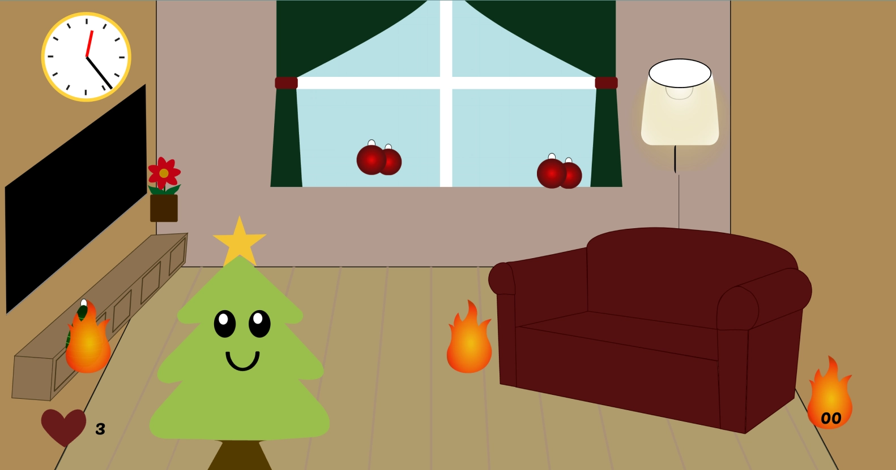
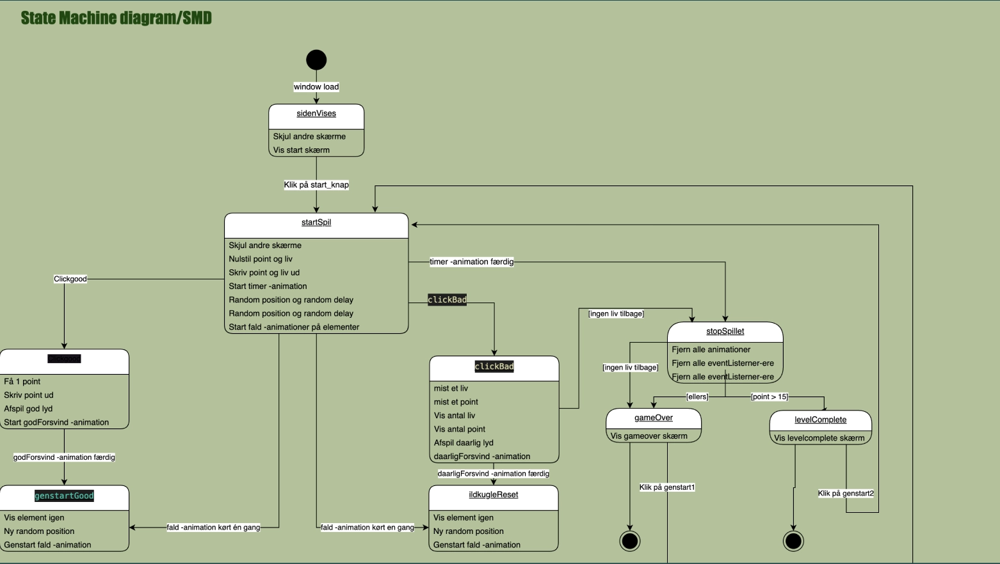

Grundlæggende Animation
I 4. forløb fik vi til opgave at lave vores eget spil fra bunden. Vi har bla. fået bekendskab med Adobe Illustrator, javascript, papirprototype hvordan man laver et State Machine Diagram og Aktivitetsdiagram. At skulle lære hvordan man bruger javascript har helt klart været det sværeste (men også det sjoveste). Jeg valgte at gå med Kawaii stilen til mit spil, da jeg synes at den passer bedst med min figur og hvilket udtryk jeg ville have den skulle give.
Et State Machine Diagram er smart fordi man skal følge de forskellige trin slavisk, når man koder det i JavaScript. Det har også gjort det nemmere at kode. De hvide bokse er funktionen, og det der er inden i dem er også det der skal være inde i funktionen når man koder.
Noget af det jeg havde sværest ved i dette forløb var javascript. Men jeg lærte at statemachine diagrammet var meget hjælpsomt når det kommer til opbygningen af javascripten. På billedet ses hvilke functioner der skal være inde i “clickGood” f.eks kan man se at man får point når man trykker på den animation som jeg har navngivet “clickGood”. Man kan også se at der er tilføjet en god lyd når man trykker på den gode animation.